Locații de nuntă în județul Teleorman
- locații în director
- 12
- cu cazare în registrul SITUR
- 1
- medie ponderată Google
- 4,1 / 5
- evaluări Google
- 4.311
Cum alegi unde mergi la vizionare
În Teleorman, puteți începe cu Alexandria, Roșiori de Vede și Vitănești. Când alegeți între oraș și o proprietate în afara lui, cereți în aceeași ofertă ora de încheiere a muzicii afară și ora până la care pot rămâne invitații în salon.
Un participant la un eveniment de la Hotel EDMA din Alexandria amintește cununia. Este un punct de plecare pentru a cere echipei informații despre locul exact al ceremoniei. A avut loc în interior sau afară? Cum se ajunge apoi la masă? Cereți răspunsul pentru oferta voastră și comparați-l cu ceea ce vă poate propune o proprietate din Vitănești pentru același număr de invitați.
Două adrese pentru o zi de vizionări
Pe hartă, între aceste două proprietăți sunt 6,0 km în linie dreaptă. Deschide indicațiile de drum din fișe ca să vezi traseul pe șosea înainte de a stabili a doua întâlnire.
- Potcoava Dunării · km. 570 pe Dunăre, 147370
- Edelweiss guesthouse, glamping and camping · Strada Șoseaua Dunării 273, 147370 Suhaia
Explorează după localitate
Toate locațiile din județul Teleorman
Ordinea ține cont de nota Google și de numărul evaluărilor. Cum calculăm ordinea
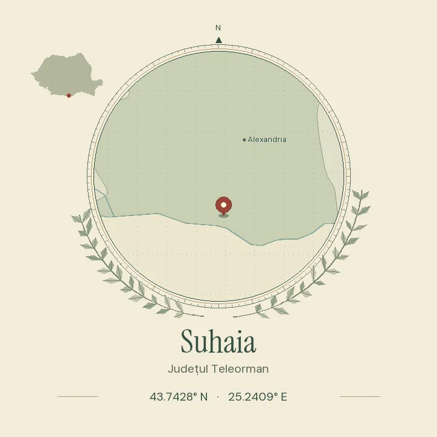
Hartă ilustrată Suhaia · Unitate de cazare rurală
Edelweiss guesthouse, glamping and camping
La Edelweiss, un vizitator își amintește primirea oferită de familie, iar denumirea locului din Suhaia enumeră pensiune, glamping și camping.
Strada Șoseaua Dunării 273, 147370 Suhaia+40 347 415 677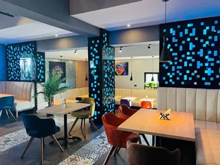
Fotografie a locației · Sursa fotografiei Roșiori de Vede · Pensiune
Hotel President
Hotel President. Un client al Hotelului President relatează diferențe între ce apărea disponibil pe platforma de rezervări și ce i s-a comunicat direct.
DN6 Km 122,8, 145100 Roșiori de Vede+40 762 630 120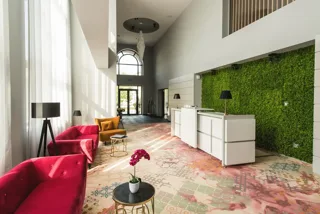
Fotografie a locației · Sursa fotografiei Alexandria · Hotel
Hotel EDMA
Restaurant de nunți în hotelul EDMA din Alexandria, cu cazare pentru invitați; laude pentru organizare, rezerve despre furnizorii externi.
Strada Dunării 2L, 140002 Alexandria+40 347 405 040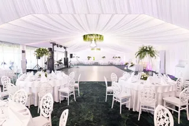
Fotografie a locației · Sursa fotografiei Zona Suhaia · Hotel
Potcoava Dunării
Un oaspete cazat într-o cabană de tip A la Potcoava Dunării descrie ultimul segment de drum spre lacul Suhai ca pietruit.
km. 570 pe Dunăre, 147370+40 769 279 041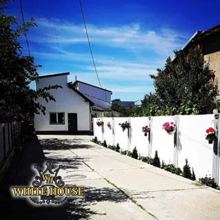
Fotografie a locației · Sursa fotografiei Alexandria · Hotel
White House Hotel
White House Hotel, Alexandria. La White House din Alexandria, un oaspete relatează că nu a avut la îndemână telecomanda pentru a-l porni.
Strada Gheorghe Doja 33A, 140045 Alexandria+40 724 885 995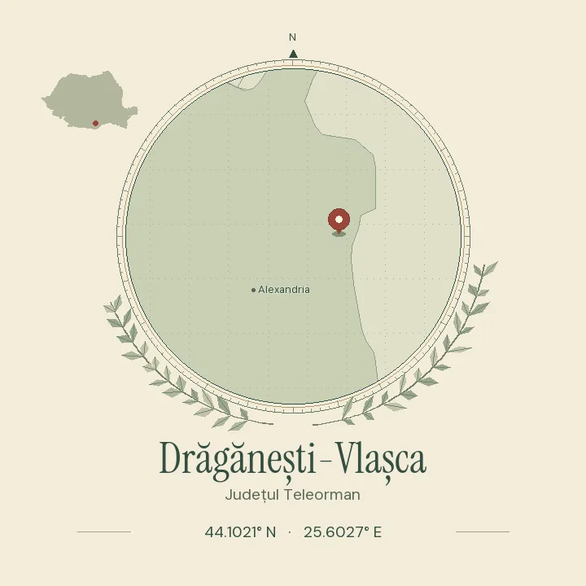
Hartă ilustrată Drăgănești-Vlașca
Undeva la Țară – Glamping Retreat
Undeva la Țară – Glamping Retreat. Gazdele prezintă locul ca retreat de glamping și estimează drumul din București la aproximativ 50 de minute.
Str. Calnistea nr 12, 147135 Drăgănești-Vlașca+40 761 774 529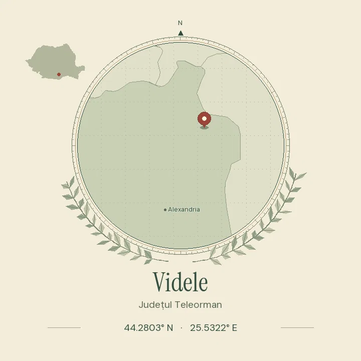
Hartă ilustrată Videle · Sală de nunți
Pensiunea Roxana, Videle
Pensiunea Roxana, Videle, Videle. Un invitat la o nuntă de la Pensiunea Roxana din Videle spune că a luat masa, a dansat și a remarcat piscina.
Strada Republicii, 145300 Videle+40 744 473 088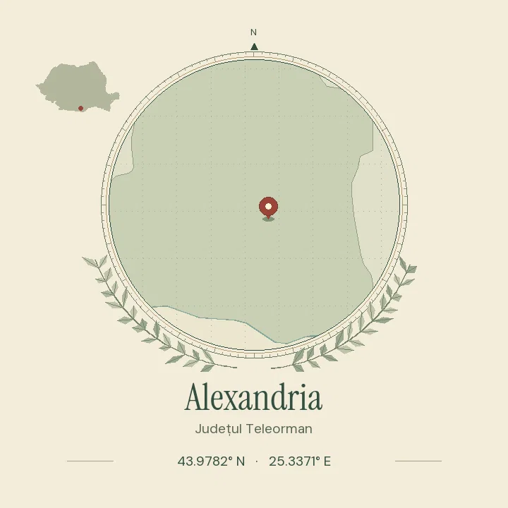
Hartă ilustrată Alexandria · Hotel
Rustic
La Rustic din Alexandria, mirii care povestesc despre nunta lor au ținut legătura cu aceeași persoană pe parcursul pregătirilor și au apreciat sfaturile ei.
Strada Alexandru Ghica, 140037 Alexandria+40 756 164 865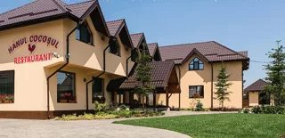
Fotografie a locației · Sursa fotografiei Vitănești · Atracție turistică
Hanul Cocoșul
Dacă îl doriți în fotografii la Vitănești, cereți să vedeți de la ce mese este liberă perspectiva și unde poate sta fotograful fără să deranjeze servirea.
Principala, 147440 Vitănești+40 746 069 779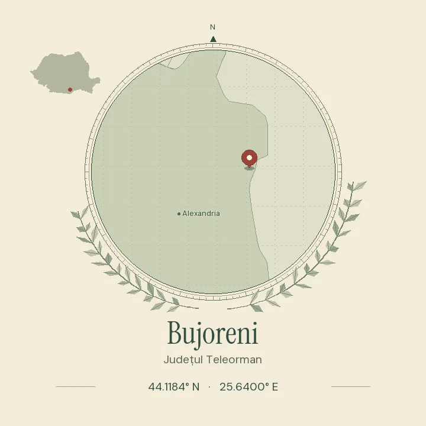
Hartă ilustrată Bujoreni · Restaurant
La Conac, Bujoreni, Teleorman
La Conac, Bujoreni, Teleorman. Un invitat de la conacul din Bujoreni își amintește mâncarea românească și atmosfera sălii amenajate pentru eveniment.
E70, Bujoreni+40 762 620 722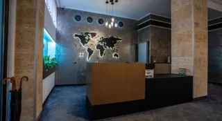
Fotografie a locației · Sursa fotografiei Turnu Măgurele · Hotel
Hotel Turris
Hotel Turris, Turnu Măgurele. Părinții unei mirese îi mulțumesc Mădălinei și echipei hotelului Turris pentru organizarea nunții fiicei lor.
Strada Independenței 1, 145200 Turnu Măgurele+40 743 553 399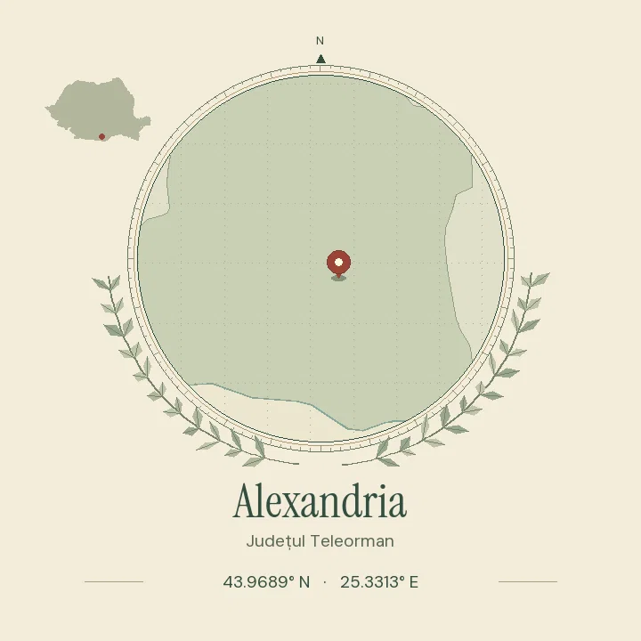
Hartă ilustrată Alexandria · Hotel
Hotel Parc Alexandria
Hotel Parc Alexandria. Pentru un grup cu mai multe camere, merită să vedeți o cameră din fiecare categorie pe care intenționați să o rezervați.
Strada Libertății 220, 140072 Alexandria+40 724 359 979
Întrebări despre locațiile din județul Teleorman
Unde pot dormi invitații în județul Teleorman?
În registrul de cazare SITUR găsim Hotel Parc Alexandria (154 de locuri de cazare). Verifică ce camere sunt libere pentru noaptea evenimentului.
Ce proprietăți din județul Teleorman au grădină sau terasă?
Hotel EDMA (terasă); Potcoava Dunării (grădină); White House Hotel (terasă). Cere administratorului condițiile de folosire pentru o petrecere privată.
Care locație din județul Teleorman are cele mai multe evaluări Google?
Hotel EDMA are 859 de evaluări în profilul Google folosit la documentare. Evaluările acoperă și alte experiențe la proprietate, inclusiv vizitele fără eveniment.
Unde apare o intrare accesibilă în județul Teleorman?
Profilurile Google indică o intrare accesibilă la Hanul Cocoșul. Pentru o cununie în exterior, cere detalii despre traseul dintre intrare și zona cu scaune.